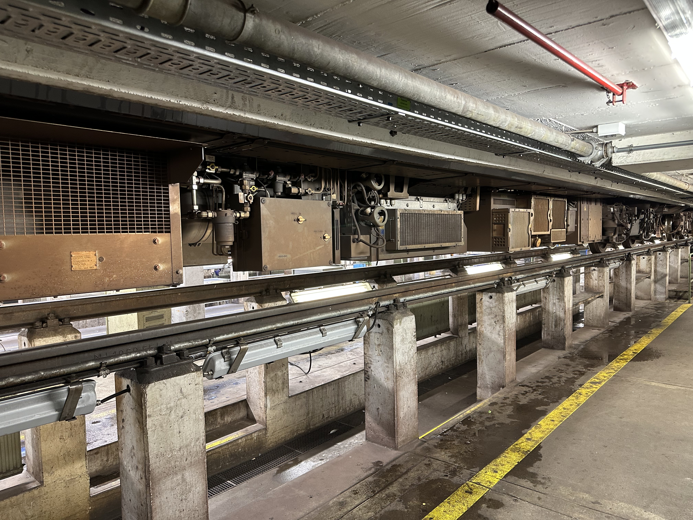
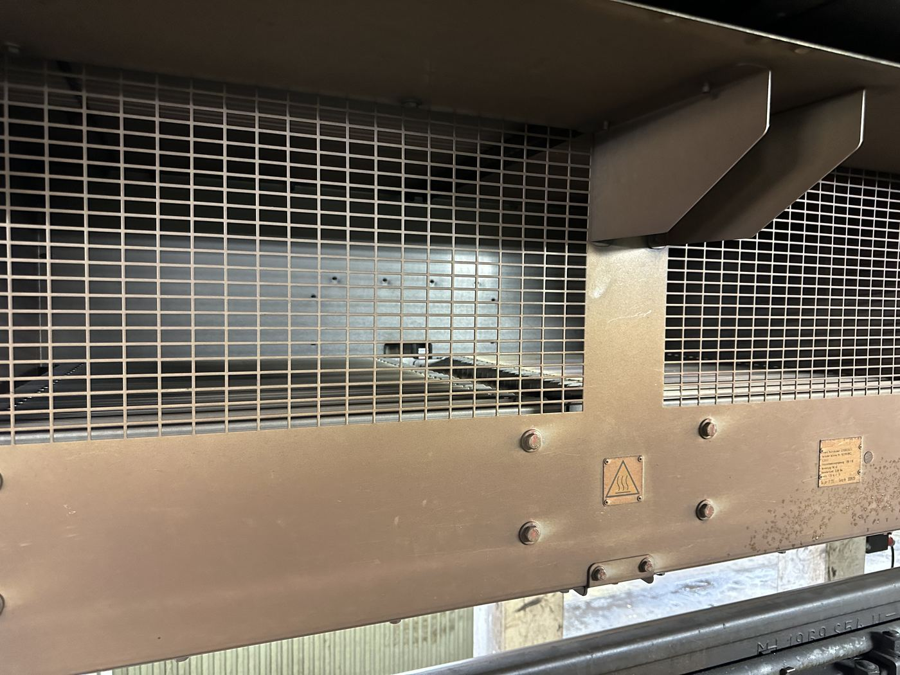

Unterflurbereich mit mehreren elektrischen Komponentenboxen.
Bauteil auf der Seite „Unterbau“
Nimmt die Abwärme aus mechanischem Bremsen, den Wirkungsgradverlusten des E-Motors und der Beleuchtung auf und gibt sie an die Umgebung ab.
Physikalisch handelt es sich um einen Rekuperator: Wärme wird über eine große, meist berippte Oberfläche von einem wärmeren Medium (Kühlkörper, Kühlflüssigkeit) an die vorbeiströmende Luft abgegeben – die Berippung vergrößert die wärmeübertragende Fläche und verbessert so den Wärmeübergang.
Ungenutzt wird diese Abwärme heute meist an die Tunnelluft abgegeben. In Pilotprojekten (z. B. Paris, London) wird sie inzwischen genutzt, um Wohnhäuser zu heizen – in Paris versorgt sie bereits ein Gebäude mit 20 Wohnungen.
Hinweis: Das Foto zeigt beispielhaft belüftete Kühlgehäuse von Leistungselektronik im Unterflurbereich; die genaue Bauteilzuordnung (Wärmetauscher vs. andere gekühlte Komponente) war vor Ort nicht eindeutig dokumentierbar.
